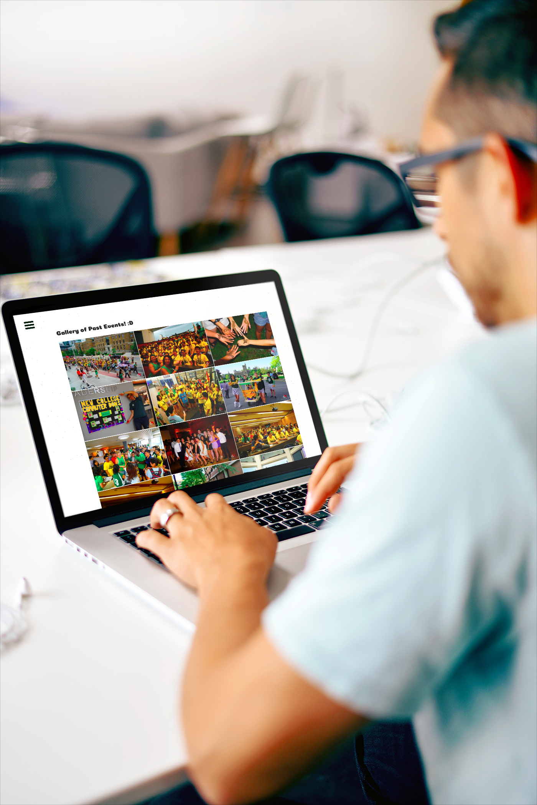
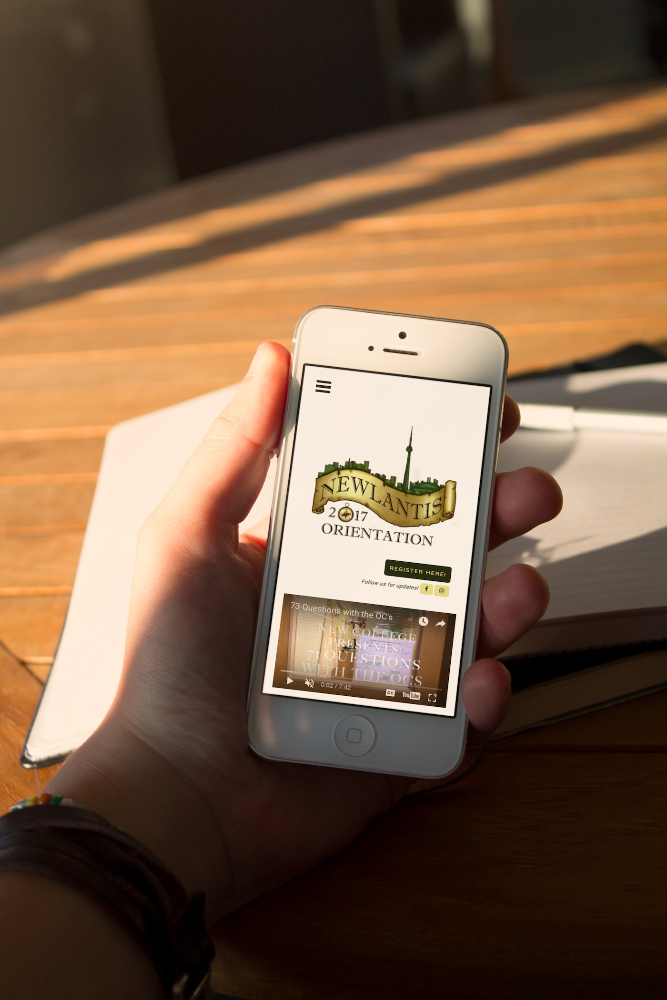

As Web Design Executive for New College's Orientation Week, I was in charge of designing and developing the website showcasing Orientation Week. The finished product had to be completely responsive, meet accessability requirements and provide all relevant information, from dates and FAQs, to partners and previous years' photos.
I was provided with the logo and colour scheme, however the layout was completely up to me.

Creating a very picture and content heavy project was definitely a fun challenge, especially as my design errs on the side of minimalistic.
I elected to keep images to a minimum, and use them as accents, save for the Gallery page.
- 
- 